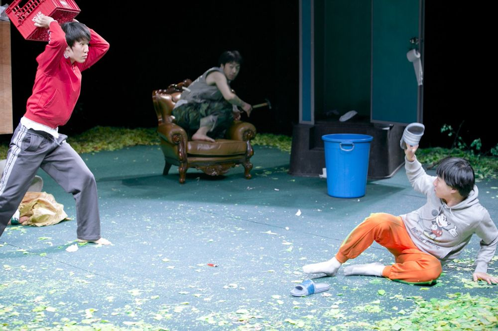

구둣방에서 사는 수음의 가족이 있다. 매일 술을 마시며 정말로 전쟁이 일어나기를 기다리는 진로 아빠와 형, 형의 여자친구 아가씨, 쌍꺼풀 수술을 하고 싶어서 집을 나간 엄마, 그리고 남의 집 텃밭과 화단에 심어진 상추와 호박과 고추를 따다 팔아서 가족의 생계를 유지하는 할머니 골룸. 골룸의 입 속에는 이 집의 전 재산, 금니 세 개가 박혀 있다. 도시의 보도블록 틈에 겨우 피어오른 풀처럼, 튼튼한 집이 아닌 노천에 살고 있는 유기농 같은 가족의 이야기. 아르코 '2012 봄 작가, 겨울 무대' 첫 번째 작품.
2012.10.30–11.2 / 대학로예술극장 소극장
작: 윤미현
연출: 윤한솔
조연출: 박현지
출연: 안민영(골룸), 이필주(진로), 정대용(수음), 정양아(아가씨), 황미영(여자), 이정호(청년), 곽동현(경찰)
이전: 사이코패스 | 다음: 원치않은, 나혜석
아카이브로 돌아가기 | 아무 작품이나
발행일 2026.11.13